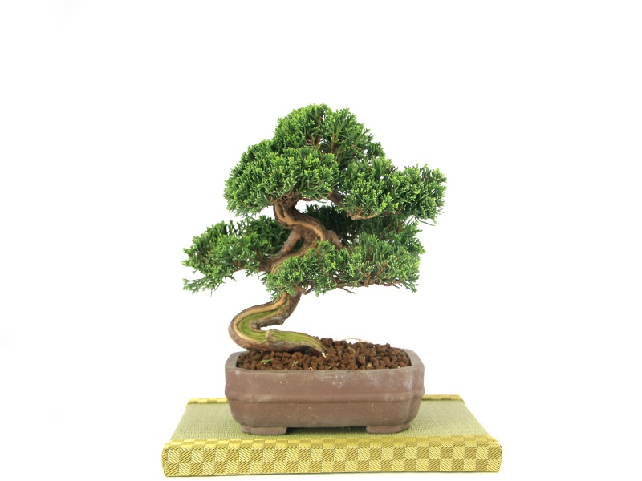

Cat Gaze
← 返回首頁
知識中心
關於我們
聯繫我們
🛒 購物車
0

葉團細節
樹幹扭轉美
比例對照
盆器底部
系魚川真柏 | 職人手作雲朵造型
編號: CG-SB002 | 松柏專區
NT$ 4,500
✦ 貓凝嚴選：葉質細緻，適合居家窗台首選
✦ 加入購物車
預計 2-3 個工作天內出貨 (不含例假日)
【Cat Gaze 嚴選檔案】
✦ 樹種
系魚川真柏 (Itoigawa Shimpaku)
✦ 樹齡
約 8 年
✦ 尺寸 (含盆高)
22公分
✦ 盆器材質
復古朱泥圓盆
✦ 特點
雲朵造型、樹性強健、極耐修剪
您的選植清單
✕
目前沒有選購植物
總計金額
NT$ 0
確認下單並結帳